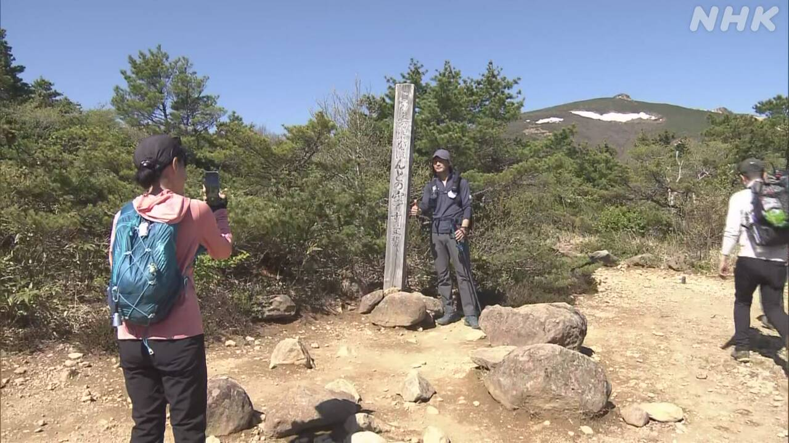

最新ニュース
1️⃣ 栃木県の事件 高校生4人と夫婦を逮捕
栃木県上三川町であった事件のニュースです。
5月14日、グループが家に入って、家族を殴ったり刺したりしました。69歳の母親が亡くなり、息子2人がけがをしました。
警察は、高校生4人と夫婦のあわせて6人を逮捕しました。高校生4人は家に入ったと考えています。夫婦は4人に指示したと考えています。警察は、このほかに事件を計画して夫婦に指示した人もいると考えてさがしています。
この家に住む家族は、家の近くに知らない車がいると、1か月ぐらい前から警察に言っていました。警察は、家の近くを何度もパトロールしていました。
警察は、犯罪する人を集める「闇バイト」に高校生がSNSで申し込んだかもしれないと考えています。
2️⃣ 大分県日田市 ことし初めての「猛暑日」
18日も日本の多くの場所で気温が上がりました。
35℃以上になった日を「猛暑日」といいます。
大分県日田市は、ことし日本の中で初めて猛暑日になりました。
兵庫県豊岡市も猛暑日になりました。気温はどちらも35.3℃でした。
気象庁によると、19日も東北から九州の多くの場所で暑くなるということです。
熱中症にならないように気をつけてください。
エアコンを使いましょう。水を何回も飲みましょう。外で仕事や運動をするときは何回も休みましょう。
3️⃣ 北海道の山で男性が熊に襲われた けがはなかった
北海道の士別市で、17日の朝、78歳の男性が山で体長1ｍぐらいの熊に襲われたということです。山菜をとっていました。
男性は「熊が自分の上に乗ってきた。熊の鼻の近くに手が当たって、熊は逃げていった」と話しています。男性にけがはありませんでした。
男性は「熊と目があったのでまずいと思った。後ろに動いたら倒れてしまった。『死ぬ』と思った。けがをしなかったのは、奇跡だと思う」と話していました。
4️⃣ 福島県 安達太良山で「山開き」があった

福島県の安達太良山で17日、「山開き」がありました。
山開きでは、山に来る人がけがをしないように祈ります。
山開きのあと、たくさんの人が山を登りました。
17日はよく晴れました。山を登る人たちは、きれいな景色の写真を撮ったり、風に吹かれながら休んだりしました。
熊にあわないように鈴を持っている人もたくさんいました。
山に登る男性は「熊は心配ですが、人がたくさんいるので少し安心だと思って来ました」と話していました。
- 〜たり〜たりする
- 〜ている / 〜でいる
- 〜くらい / 〜ぐらい
- 〜から
- 〜がある / 〜がいる
- 〜かもしれない / 〜かもしれません
- 〜以上
- 〜になる
- 〜中
- 〜こと
- 〜によると
- 〜という
- 〜ならない
- 〜てください / 〜でください
- 〜ように
- 〜ましょう / 〜ましょうか
- 〜ので
- 〜と思う
- 〜ず / 〜ずに
- 〜てしまう
- 〜後 / 〜あと
- 〜ながら
vebaev.github.io
Generated: 2026-05-18 16:25:28 UTC